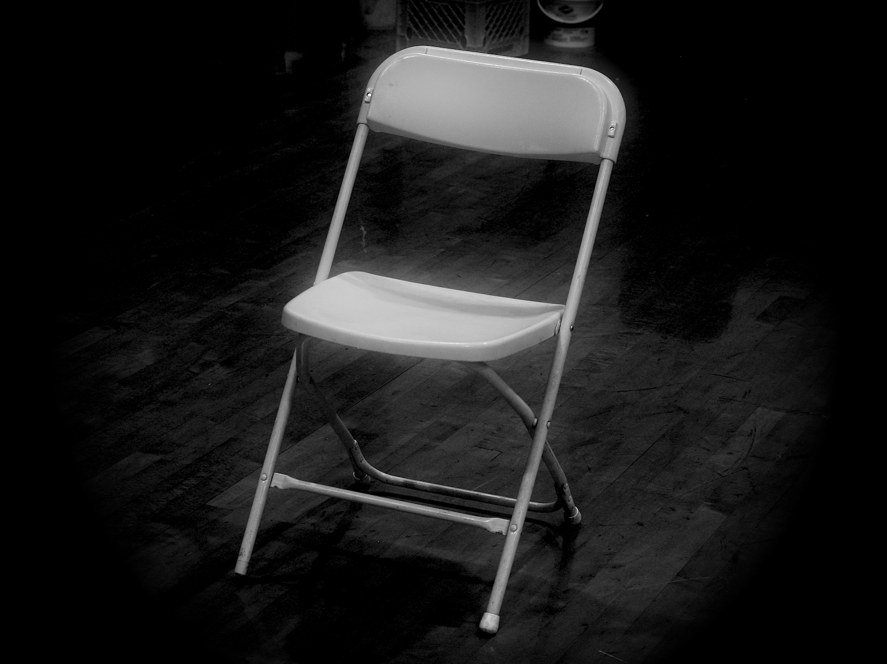
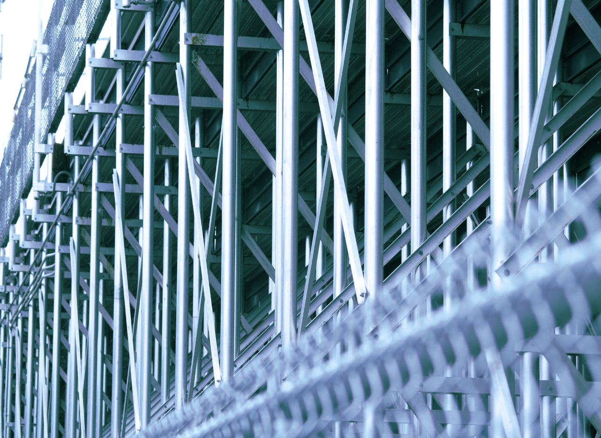
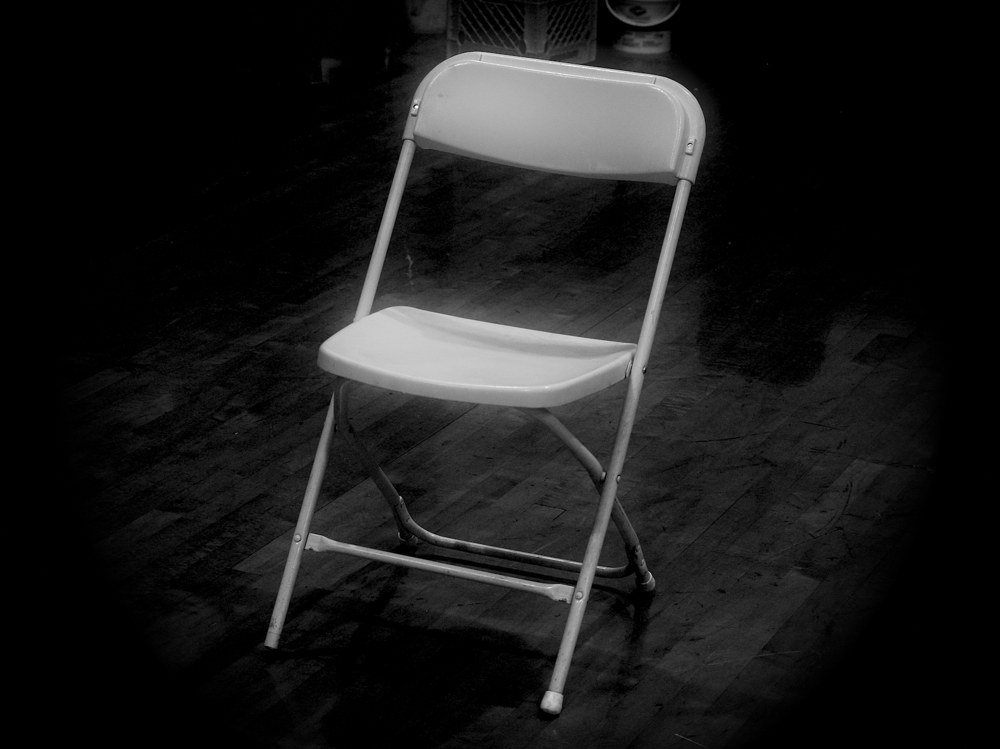
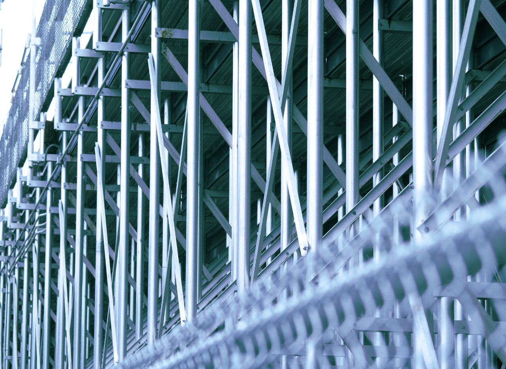
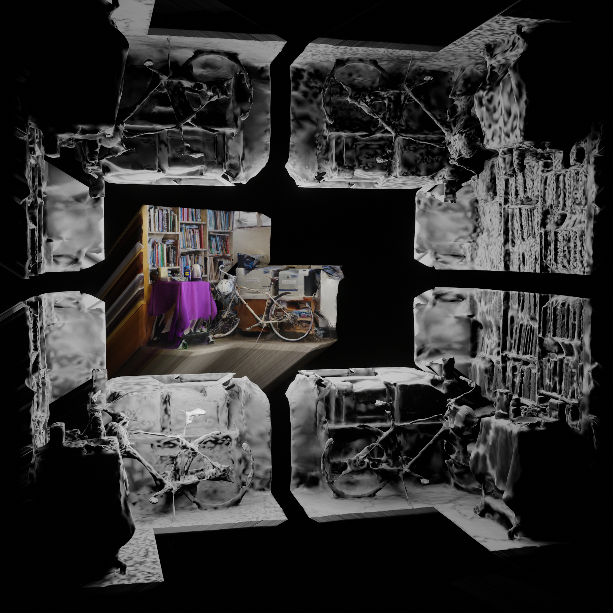
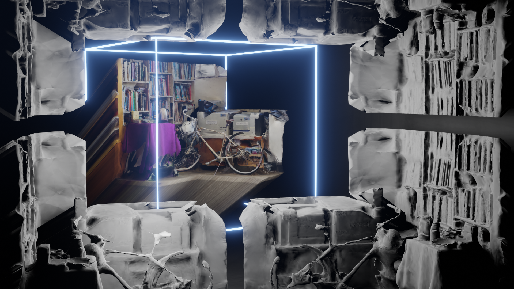
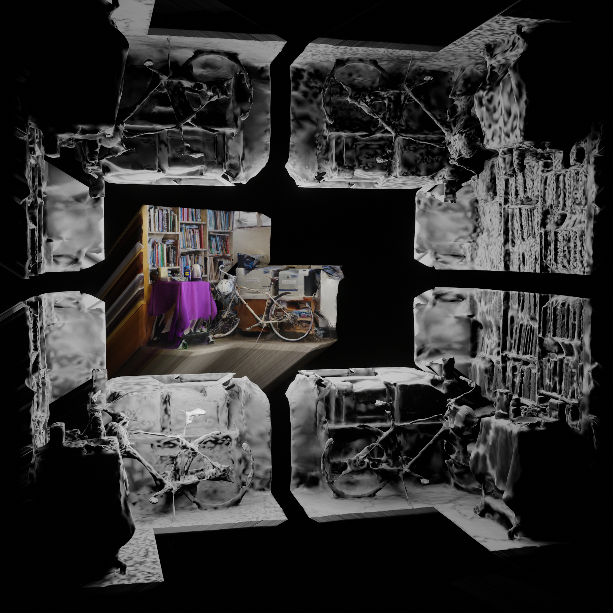
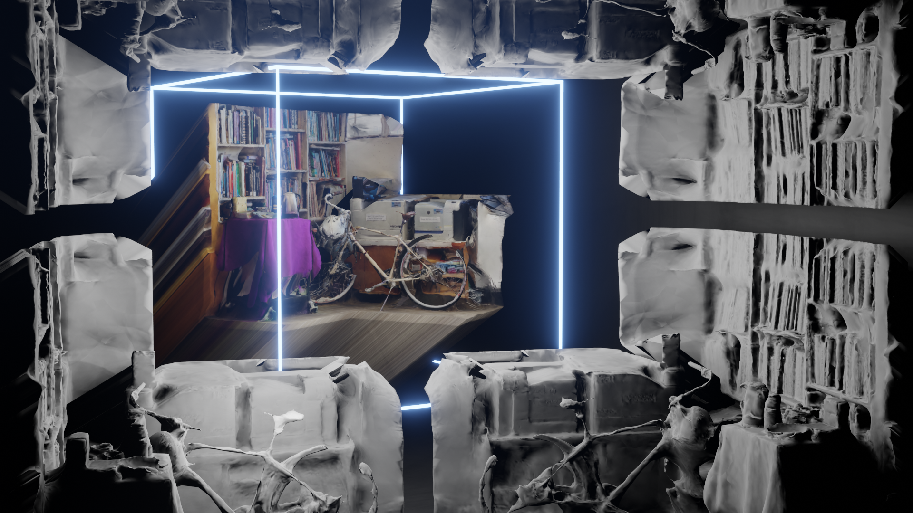

Super-ultra-pro-plus-extreme-mega-mushroom
June 2023
Figure ground chair
April 2023
Shadows
April 2023
 



 





 theme project 1
theme project 1
 theme project 2
theme project 2
 theme project 4
theme project 4